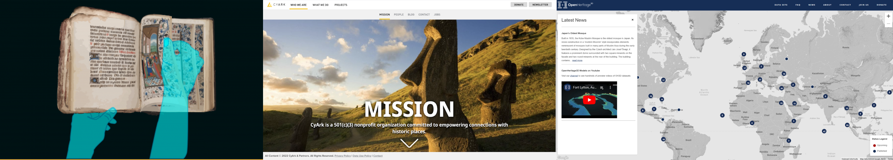
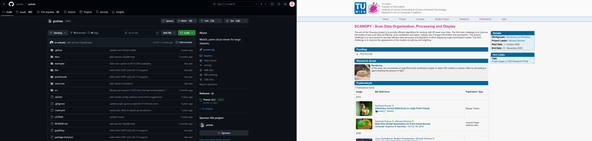
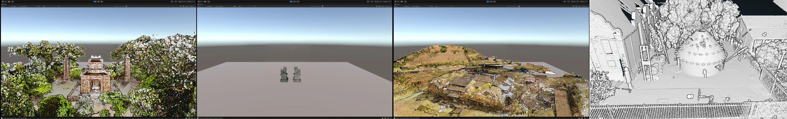

The preview mode of a time machine.
Initiative
VR technology has revolutionized visual experiences. Despite its limitations, applications like Google Earth and medical tools have shown the immense value of immersive data visualization. Meanwhile, archaeological data remains largely inaccessible and unfriendly to the general public, presenting an ideal opportunity for innovation.
This project uses open-source datasets from Open Heritage to reconstruct ancient sites in an immersive virtual space, enabling users to explore and interact with history like never before.
Research & Ideation
Google Earth VR was a major inspiration during the ideation process. It provided an unprecedented experience, allowing me to fly over a realistic visualization of Earth and navigate to places like my college dorm or favorite art museum.

It felt natural to consider an archaeology application. As a player, I’ve seen many games based on historical settings, with VR emerging as a powerful new medium. Combining both to create a valuable experience was intuitive. I explored various related applications, many of which were academic and highly inspiring. Most importantly, I discovered OpenHeritage, which provided the data needed to bring this idea to life.
Product Design & Development
The OpenHeritage website features an embedded application that allows users to view data through a WebGL-based Point Cloud viewer, developed by Vienna University of Technology in collaboration with UCSD. This tool, which is open-sourced, provided a solid foundation for my work. I decided to build upon it, focusing on exploring interaction and visualization capabilities that go beyond what is possible on a flat PC webpage.
The main challenge was converting the LiDAR data into a mesh model suitable for Unity VR applications. I used a tool called CloudCompare to import, clean, and downsample the LiDAR dataset. The processed point cloud was then imported into Blender using the Point Cloud Visualizer plugin to create the mesh. The rest of the process was more familiar to me, focusing on implementing VR interactions using controllers and simple hand gestures. For instance, one cool feature allowed users to quickly swing down the controllers or their hands to randomly switch to a different historical site.
Outcome
• Successfully recreated native VR versions of ancient sites, enabling users to experience archaeology interactively.
• Received positive feedback from 10+ testers, highlighting the project's potential for education and cultural preservation.
• 80% of participants said they would be more interested in learning about archaeology if presented in this interactive format.
• Demonstrated how VR technology, supported by open-source data and tools, can bridge the gap between physical heritage sites and modern audiences.